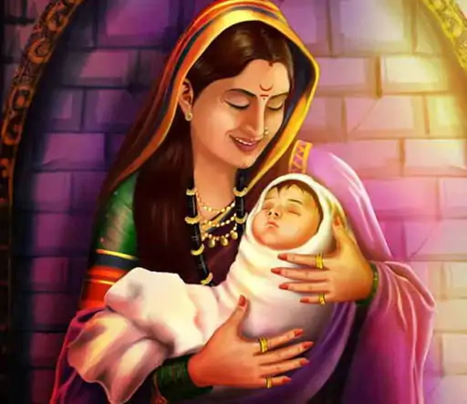
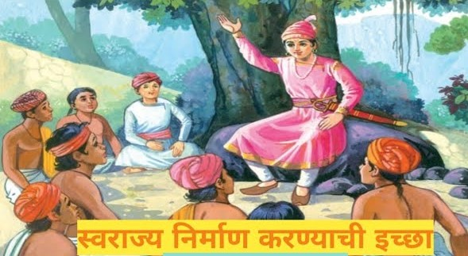
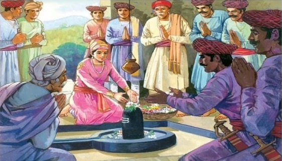
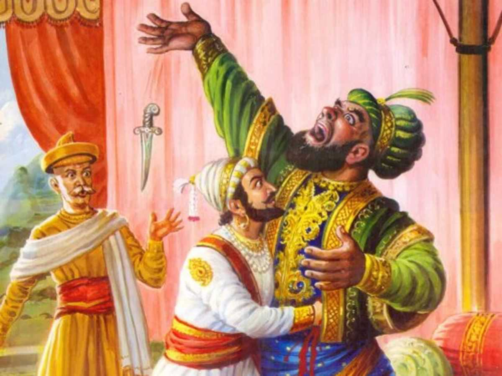
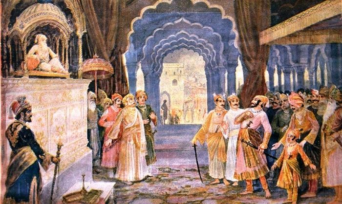
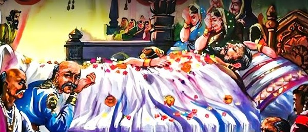

<section id="king">
<div class="container-fluid">
  <div class="row">
    <div class="card">
      <div class="row" data-aos="fade-right" data-aos-duration="3000">
        <div class="col-xl-8 col-lg-8 col-md-8 col-sm-6 col-xs-6" >
          <p class="head">छत्रपती शिवाजी महाराजांचा जन्म -</p>
          <p class="text">
            छत्रपती शिवाजी महाराज हे भारताचे महान योद्धे होते. ते मराठा
            साम्राज्याचे राजाही होते. महाराजांचा जन्म 19 फेब्रुवारी 1630 रोजी
            शिवनेरी किल्ल्यावर झाला. महाराजांचे वडील शहाजी भोसले हे विजापूर
            येथील सुलतानाच्या सैन्यात सेनापती होते आणि महाराजांच्या आई जिजाबाई
            या जाधव कुळात जन्मलेल्या प्रतिभावान स्त्री होत्या. असे म्हटले जाते
            की जिजाबाईंनी शिवाई देवीला तिला बलवान पुत्र देण्यास सांगितले.
            म्हणूनच छत्रपती शिवाजी महाराजांचे नाव शिवाजी ठेवले गेले. छत्रपती
            शिवाजी महाराजांचे चारित्र्य त्यांच्या पालकांसारखेच होते. महाराजांवर
            त्यांच्या पालकांचा खूप प्रभाव होता. त्यांचे बालपण त्यांच्या आईच्या
            मार्गदर्शनाखाली गेले. त्यांची आई जिजाबाई यांनी महाराजांना राजकारण
            आणि युद्धाचे प्रशिक्षण दिले तसेच परकीय शक्तींवर हल्ला करण्यासाठी
            आवश्यक असलेल्या शिस्तीचे प्रशिक्षण दिले. त्यांनी महाराजांच्या
            शिक्षणाची जबाबदारी घेतली आणि त्यांना युद्धकलेचे शिक्षण दिले. एवढ्या
            लहान वयातही महाराजांना हा सारा प्रसंग समजू लागला होता. त्यांच्या
            हृदयात स्वराज्याची ज्योत पेटली. त्यांना स्वतःचे राज्य उभे करायचे
            होते. महाराजांना आपल्या राज्याला स्वातंत्र्य मिळवायचे होते.
            महाराजांसोबत काही शूर आणि खरे मित्रही होते ज्यांनी महाराजांना
            स्वराज्य स्थापनेसाठी मदत केली.
          </p>
        </div>
        <div class="col-xl-4 col-lg-4 col-md-4 col-sm-6 col-xs-6 d-flex justify-content-center" >
          
        </div>
      </div>
      <div class="row" data-aos="fade-left" data-aos-duration="3000">
        <div class="col-xl-4 col-lg-4 col-md-4 col-sm-6 col-xs-6 d-flex justify-content-center">
          
        </div>
        <div class="col-xl-8 col-lg-8 col-md-8 col-sm-6 col-xs-6">
          <p class="head">स्वराज्य निर्माण करण्याची इच्छा -</p>
          <p class="text">
            महाराजांचा जन्म शिवनेरी येथे झाला. शिवनेरीसोबतच त्यांचे बालपण माहुली
            आणि पुण्यात गेले . शहाजी महाराजांनी संपूर्ण महाराष्ट्राचा कारभार
            छत्रपती शिवाजी महाराज आणि जिजाबाई यांच्याकडे सोपवून त्यांना पुण्याला
            पाठवले. जहांगिरी व्यवस्था दादाजी कोंडदेव आणि शहाजी राजांनी नियुक्त
            केलेल्या काही निष्ठावंत सरदारांची देखरेख करत असे. आई जिजाबाईं
            प्रमाणेच छत्रपती शिवाजी महाराजांमध्येही कणखरपणा, देशप्रेम आणि कठीण
            परिस्थितीतून बाहेर पडण्याचे ध्येय होते. या गुणांमुळेच छत्रपती शिवाजी
            महाराज घडले. आईकडून मिळालेली शिकवण आणि प्रेरणा छत्रपती शिवाजी
            महाराजांना स्वराज्य निर्माण करण्यासाठी प्रेरित करते. स्वराज्य म्हणजे
            स्वतःचे राज्य. आपल्या स्वराज्याचे रक्षण करायचे असेल तर किल्ले हवेत
            असे महाराजांना वाटत असे. हे त्यांना लहान वयातच कळले. दादोजी कोंडदेव
            यांच्या मृत्यूनंतर आता संपूर्ण महाराष्ट्राची जबाबदारी छत्रपती शिवाजी
            महाराजांवर होती.त्यांनी हळूहळू किल्ले काबीज करण्यासाठी अनेक मोहिमा
            राबवल्या आणि त्या यशस्वीपणे पूर्ण केल्या. त्यांनी त्यांच्या वयातील
            शूर तरुणांना एकत्र केले आणि देशपांडे, देशमुख इत्यादींशीही त्यांचे
            वेगळे संबंध होते. महाराजांनी हळूहळू पुण्याच्या आजूबाजूचे काही
            उध्वस्त किल्ले आणि डोंगर काबीज करण्यास सुरुवात केली. तोरणा किल्ला हा
            महाराजांचा पहिला काबीज केलेला किल्ला होता. त्यानंतर त्यांनी राजगड
            आणि हळूहळू एकूण 360 किल्ले ताब्यात घेतले. त्यांना तानाजी मालसुरे,
            नेताजी पालकर, कान्होजी जेधे, येसाजी कंक, बाजीप्रभू देशपांडे, बाजी
            पासलकर आदी दिग्गज व्यक्तींची साथ होती.
          </p>
        </div>
      </div>
      <div class="row" data-aos="fade-right" data-aos-duration="3000">
        <div class="col-xl-8 col-lg-8 col-md-8 col-sm-6 col-xs-6">
          <p class="head">स्वराज्य शपथ-</p>
          <p class="text">
            रायरेश्वर किल्ला स्वराज्याच्या शपथेचा साक्षीदार आहे. याच गडावर
            छत्रपती शिवाजी महाराजांनी स्वराज्याची शपथ घेतली होती. ते फक्त 16
            वर्षांचे असताना छत्रपती शिवाजी महाराजांनी रायरेश्वर किल्ल्यावर
            स्वराज्य तोरण बांधले. हिंदवी स्वराज्य स्थापन करू इच्छिणाऱ्या छत्रपती
            शिवाजी महाराजांनी शूर तरुणांचा एक गट तयार केला ज्याला त्यांनी
            "मावळा" असे नाव दिले. या मूठभर मावळ्यांच्या मदतीने त्यांच्यात
            धर्मप्रेम निर्माण करून त्यांच्याशी लढा दिला, स्वराज्याची संकल्पना
            शिकवली आणि समजावून सांगितली. हिंदवी स्वराज्यासाठी मावळ्यांनी आपले
            रक्त सांडले. अवघ्या पन्नास वर्षांच्या कालावधीत त्यांनी विजापूर आणि
            दिल्लीच्या राजांना आपल्यापुढे झुकवले. महाराजांनी रायरेश्वर
            किल्ल्यावर हिंदवी स्वराज्य स्थापनेची घोषणा केली त्यांचा राज्याभिषेक
            केला. हिंदू धर्माला हक्काचा राजा मिळाला. राज्यातील जनता छत्रपती
            शिवाजी महाराजांना आपले भविष्य सांगू लागली महाराजांनी हिंदू धर्मातील
            वेद, पुराणे आणि मंदिरे यांचे रक्षण केले आणि वयाच्या 16 व्या वर्षी
            महाराजांनी 27 एप्रिल रोजी कान्होजी जेधे, बाजी पासलकर, तानाजी
            मालसुरे, नरसप्रभु गुप्ते, सोनोपंत डबीर, सूर्याजी मालुसरे, येसाजी
            कंक, सूर्याजी काकडे सह रायरेश्वर मंदिरात जाऊन स्वराज्याची शपथ घेतली.
          </p>
        </div>
        <div class="col-xl-4 col-lg-4 col-md-4 col-sm-6 col-xs-6 d-flex justify-content-center">
          
        </div>
      </div>
      <div class="row" data-aos="fade-left" data-aos-duration="3000">
        <div class="col-12">
          <p class="head">राज्याचा विस्तार -</p>
          <p class="text">
            ज्या वेळी विजापूर राज्य अंतर्गत कलह आणि परकीय आक्रमणाच्या काळातून
            जात होते, तेव्हा महाराजांनी त्यांची सेवा करण्याऐवजी साम्राज्याच्या
            सुलतानविरुद्ध रणनीती आखण्यास सुरुवात केली. मावळ प्रदेश पश्चिम घाटाला
            लागून आहे आणि 150 किमी लांब आणि 30 किमी रुंद आहे. त्यांच्या संघर्षमय
            जीवनामुळे त्यांना एक कुशल योद्धा मानले जाते. या भागात मराठा आणि इतर
            जातीचे लोकही राहत होते. छत्रपती शिवाजी महाराजांनी या सर्व जातींच्या
            लोकांना मावळ्यांच्या नावाने संघटित केले आणि त्यांच्याशी संपर्क करून
            त्यांची ओळख करून घेतली. त्यांनी युवकांना आणून किल्ल्याचे बांधकाम
            सुरू केले.पुढे मावळ्यांचे सहकार्य छत्रपती शिवाजी महाराजांसाठी अत्यंत
            महत्त्वाचे ठरले. त्या वेळी विजापूर घुसखोरी आणि मुघल आक्रमणांनी
            त्रस्त होते.विजापूरच्या सुलतान आदिलशहाने अनेक किल्ल्यांमधून आपले
            सैन्य काढून घेतले आणि ते स्थानिक राज्यकर्त्यांच्या किंवा
            सरंजामदारांच्या स्वाधीन केले. आदिलशहाच्या आजारपणाची आता विजापूरमध्ये
            चर्चा होऊ लागली आणि छत्रपती शिवाजी महाराजांनी परिस्थितीचा फायदा घेत
            विजापूरमध्ये प्रवेश करण्याचे ठरवले. पुढे छत्रपती शिवाजी महाराजांनी
            विजापूरचे किल्ले काबीज करण्यास सुरुवात केली. छत्रपती शिवाजी
            महाराजांनी प्रथम तोरणा किल्ला ताब्यात घेतला आणि नंतर छत्रपती शिवाजी
            महाराजांनी रोहिडेश्वर किल्ला ताब्यात घेतला. छत्रपती शिवाजी
            महाराजांनी आपल्या एका दूताला आदिलशहाकडे पाठवले आणि सांगितले की, मी
            तुला आधीच्या किल्ल्याचा रखवालदारापेक्षा जास्त पैसे द्यायला तयार आहे.
            त्यामुळे हा प्रदेश काबीज करण्यासाठी महाराजांनी आदिलशहाच्या काही
            सरदारांना आपल्या बाजूने सामील होण्यासाठी आधीच लाच दिली होती. तेथून
            10 किमी अंतरावर राजगडचा किल्ला होता. तिथे छत्रपती शिवाजी महाराजांना
            पकडले आणि आदिलशहाला ते मिळाले तेव्हा त्याने शाहजी राजाला छत्रपती
            शिवाजी महाराजांवर लक्ष ठेवण्यास सांगितले. पण छत्रपती शिवाजी
            महाराजांनी चाकण किल्ला ताब्यात घेऊन कोंढाणा किल्ला जिंकला.
            औरंगजेबाने मिर्झा राजा जयसिंगला छत्रपती शिवाजी महाराजांचे 23 किल्ले
            ताब्यात घेण्यासाठी पाठवले आणि पुरंदर किल्लाही उद्ध्वस्त
            केला.त्यावेळी महाराजांना आपला मुलगा संभाजी याला मिर्झा राजा
            जयसिंगच्या स्वाधीन करावे लागले. म्हणून महाराजांनी कोंढाणा किल्ला
            ताब्यात घेतला. तानाजी मालसुरे यांना कोंढाणा किल्ल्यावर वीर मरण आले ,
            म्हणून छत्रपती शिवाजी महाराजांनी या किल्ल्याला सिंहगड असे नाव दिले.
            शहाजी राजेंना सुपा व पुण्याची जहागीरदारी देण्यात आली.सुपाचा किल्ला
            महादजी निळकंठरावांच्या ताब्यात होता. महाराजांनी रात्री सुपे
            किल्ल्यावर हल्ला करून किल्लाही ताब्यात घेतला.बाजी मोहिते यांना
            कर्नाटकात शहाजी राजांकडे पाठवले. त्यांचे सैन्यही छत्रपती शिवाजी
            महाराजांच्या सैन्यात सामील झाले. त्याच वेळी पुरंदर किल्ल्याचा सरदार
            मरण पावला आणि त्याच्या तीन मुलांमध्ये गडाच्या वारसासाठी भांडण झाले.
            दोन भावांच्या निमंत्रणावरून छत्रपती शिवाजी महाराज पुरंदर किल्ल्यावर
            पोहोचले महाराज हे 1647 पर्यंत चाकण नीरा प्रदेशाचे राज्यकर्ते होते.
            महाराजांचे सैन्य आता वाढू लागले होते म्हणून त्यांनी रणांगणात
            उतरण्याचा निर्णय घेतला. महाराजांनी घोडदळ तयार करून आबाजी सौंदरच्या
            नेतृत्वाखाली सैन्य कोकणात पाठवले. लुटलेली सर्व मालमत्ता रायगडमध्ये
            सुरक्षित ठेवण्यात आली होती.कल्याणच्या राज्यपालाच्या सुटकेनंतर
            छत्रपती शिवाजी महाराज कुलाब्याच्या दिशेने निघाले.
          </p>
        </div>
      </div>
      <div class="row" data-aos="fade-right" data-aos-duration="3000">
        <div class="col-xl-4 col-lg-4 col-md-4 col-sm-6 col-xs-6 d-flex justify-content-center">
          
        </div>
        <div class="col-xl-8 col-lg-8 col-md-8 col-sm-6 col-xs-6">
          <p class="head">अफझलखानाचा वध-</p>
          <p class="text">
            महाराजांच्या शौर्यामुळे किल्ला काबीज करण्याच्या त्यांच्या हालचालींना
            वेग आला. त्यामुळे मुघल, निजाम आणि आदिलशाही यांच्यात अराजक माजले
            होते. म्हणूनच आदिलशहाने इ.स. 1659 मध्ये आपल्या दरबारात छत्रपती
            शिवाजी महाराजांची हत्या करण्याचा निर्णय घेतला. आदिलशहाला आपल्या
            सैनिकांवर खूप राग आला आणि म्हणूनच त्याने आपल्या सैनिकांना आव्हान
            दिले की तुमच्यापैकी कोणी एक छत्रपती शिवाजी महाराजांना मारेल.
            तेवढ्यात अफझलखान नावाचा शिपाई पुढे आला आणि त्याने महाराजांना ठार
            मारण्याची प्रतिज्ञा घेतली. . अफझलखान महाराजांचा पराभव करण्यासाठी
            मोठ्या सैन्यासह निघाला. वाटेत तो हिंदू धर्मातील सर्व मंदिरे उध्वस्त
            करू लागला आणि गरिबांनाही त्रास देऊ लागला. वाईला पोहोचल्यावर
            महाराजांनी त्यांना प्रतापगडावर भेटायचे ठरवले. अफजलखान प्रतापगडच्या
            पायथ्याशी बसला होता. भेटीच्या दिवशी अफझलखान म्हणत होता की महाराजांनी
            स्वतः भेटायला यावे. भेटायची वेळ झाली. अफजलखान फसवणूक करणारा होता.
            म्हणूनच महाराजानी वाघनखे आपल्या चिलखत मध्ये लपवून ठेऊन आई
            जिजाबाईंच्या चरणांना स्पर्श करून आशीर्वाद घेतले. महाराज अफजलखानाला
            भेटायला गेले. महाराजांसोबत जीवा महाल आणि अफझलखानचा सरदार सय्यद बंडा
            हा त्याचा विश्वासू सरदार होता. प्रतापगडच्या पायथ्याशी अफझलखानाने
            बांधलेल्या छावनीत भेटायचे ठरले. अफजल खानाने छत्रपती शिवाजी
            महाराजांना भेटण्याचा निरोप पाठविला. छत्रपती शिवाजी महाराजांना
            त्याच्याघातपाती स्वभावाची जाणीव होती.भेटीसाठी कोणतेही हत्यार कोणाकडे
            नसतील आणि दोन्ही पक्षाचे 10 अंगरक्षक असतील त्या अंगरक्षकांपैकी एक
            शामियानाच्या बाहेर थांबेल.अशी अट ठरली. भेटीच्या वेळी अफजलखान
            वेळेआधीच शामियानेत पोहोचला.शामियाना मोठा होता. निःशस्त्र भेटायचे असे
            ठरले होते. तरी ही अफजलखानाने आपल्या अंगरख्याखाली कट्यार लपवून ठेवली
            होती. अफजल खान काही कट कारस्थान करून घात पात करेल ह्याचा अंदाज
            छत्रपती शिवाजी महाराजांना आला होता. म्हणून त्यांनी देखील आपल्या
            अंगरख्याखाली चिलखत घातले ,जिरेटोप खाली शिरस्त्राण घातले आणि मुठीत
            सहज न दिसणारी अशी वाघनखे लपविली होती.दोघांचे वकीलच बरोबर असतील असे
            ठरले. अफजल खानाची उंचीपुरी देहयष्टी होती तरी ही छत्रपती शिवाजी राजे
            न घाबरता शामियानात पोहोचले. शिवरायांना बघून या शिवबा आमच्या मिठीत या
            असं म्हणत अफजल खानाने मिठी मारण्यासाठी हात पसरविले आणि त्यांना जवळ
            बोलविले. छत्रपती शिवाजी महाराजांनी त्याला मिठी मारली. अफजल खान ने
            त्यांना आपल्या बाहुपाशेत घेण्याचा प्रयत्न केला आणि अफजल खानाने
            लपविल्या कट्यारने छत्रपती शिवाजी महाराजांच्या पाठीत वार केला आणि
            त्यांना आपल्या काखेत दाबण्याचा प्रयत्न केला. छत्रपती शिवाजी महाराज
            पूर्वी पासून सावध होते. अफजल खानाच्या प्रहाराने छत्रपती शिवाजी
            महाराजांनी आपल्या मुठीतील वाघनखे काढून त्याच्या पोटात घुसवून
            त्याच्या आतड्याचं बाहेर काढल्या आणि त्याला ठार केले. अशा प्रकारे
            छत्रपती शिवाजी महाराजांनी अफजलखानाचा आपल्या बुद्धी कोशल्यतेने वध
            केला. अफजलखानाने "दगा दगा" म्हणत आकांत केला त्याच्या आवाजाला ऐकून
            बाहेर उभारलेला सय्यद आत आला अफजल खान ला ठार झालेले बघून त्याने
            दांडपट्ट्याने छत्रपती शिवाजी महाराजांवर हल्ला करण्याच्या प्रयत्न
            केला. तो पर्यंत जिवा महालाने त्याच्या वाराला निष्फळ करून त्याच्या वर
            मागून हल्ला करून सय्यद ला ठार मारून छत्रपती शिवाजी महाराजांच्या
            प्राणाचे रक्षण केले. "होता जिवा म्हणून वाचला शिवा "असे म्हणतात.
            झाडीत लपलेल्या सर्व मावळांनी अफजलखानाच्या सैन्यावर हल्ला करून
            त्यांना पळवून लावले. . अफझलखानाचा मुलगा फजलखान आणि त्याचे काही
            सैन्यही वाईच्या मुख्य छावणीत पोहोचले होते, परंतु छत्रपती शिवाजी
            महाराजांचा हा पराक्रम पाहून संपूर्ण सैन्य, हत्ती आणि घोडेस्वार सोडून
            ते पळून गेले.
          </p>
        </div>
      </div>
      <div class="row" data-aos="fade-left" data-aos-duration="3000">
        <div class="col-xl-8 col-lg-8 col-md-8 col-sm-6 col-xs-6">
          <p class="head">आग्रा ला भेट -</p>
          <p class="text">
            महाराजांचे जीवन अत्यंत कठीण होते. एक संकट दूर झाले आहे आणि दुसरे
            संकट त्यांची वाट पाहत आहे.1666 मध्ये औरंगजेबाने महाराजांना
            विजापूरच्या आक्रमणावर बोलण्यासाठी दिल्लीला बोलावले. नवीन वर्षासाठी
            महाराज संभाजीसह दिल्लीला पोहोचले. मात्र, दरबारात पोचल्यावर
            औरंगजेबाचा अपमान त्यांना सहन झाला नाही, म्हणून ते ताबडतोब दरबारातून
            निघून गेले, पण औरंगजेबाने त्यांना अटक करण्यासाठी आपले सैनिक पाठवले
            आणि त्यांना अटक केली आणि लवकरच त्यांना आग्रा येथे मिर्झा .जयसिंगचा
            मुलगा राजे रामसिंग यांच्याकडे पाठवले. छत्रपती शिवाजी महाराजांच्या
            पराक्रमामुळे आणि शौर्यामुळे सर्वजण छत्रपती शिवाजी महाराजांना घाबरत
            होते. मिर्झा राजे रामसिंग यांनाही हीच भीती होती. म्हणूनच त्यांनी
            महाराजांवर करडी नजर ठेवली. आता महाराजांची सुटका करणे थोडे अवघड वाटू
            लागले. पण प्रत्येक वेळी महाराजांनी चांगली कल्पना सुचली. महाराजांनी
            आजारी असल्याचे नाटक केले. त्यांची तब्येत बरी नसताना तेथून त्यांना
            फळे मिळू लागले . यापूर्वी या पेट्यांची अत्यंत कसून तपासणी करण्यात
            येत होती मात्र काही काळानंतर तपासणीत काही निष्काळजीपणा दिसून आला.
            तेव्हा छत्रपती शिवाजी महाराज आणि संभाजी महाराजांनी या संधीचा फायदा
            घेत पेटी न तपासता आत जाऊन एका पेटीत बसून पळ काढला. त्यांच्या जागी
            त्यांचे विश्वासू सरदार हिरोजी फर्जद यांनी त्यांचे कपडे घातले आणि
            खोलीत झोपले जेणेकरून महाराजांच्या अंगठीच्या खुणा दिसतील. थोड्या
            अंतरावर आल्यावर महाराजही पहारेकऱ्यांना रणशिंग फुंकून पळून गेले.
            खोलीत काहीच हालचाल दिसली नाही तेव्हा सैनिकांनी ने शोधाशोध सुरू केली.
            त्यानंतर छत्रपती शिवाजी महाराजही येथून पळून गेल्याचे त्यांच्या
            लक्षात आले. छत्रपती शिवाजी महाराज हातून निसटल्याच्या 24 तासांनंतरच
            त्यांना हे समजले. वेश बदलून छत्रपती शिवाजी महाराजांनी स्वराज्यात न
            जाता मथुरेला पोहोचून आपले काही निष्ठावंत सरदार व संभाजी राजांना
            पाठवले. त्यानंतरही महाराजांना खूप काळजी घ्यावी लागली कारण ते स्वतः
            अनेक अडचणी पार करून येथे पोहोचले. एवढेच नव्हे तर महाराजांनी स्थापन
            केलेल्या अष्ट प्रधान मंडळाने महाराजांच्या गैरहजेरीत स्वराज्याचे
            कार्य उत्तम प्रकारे केले होते.
          </p>
        </div>
        <div class="col-xl-4 col-lg-4 col-md-4 col-sm-6 col-xs-6 d-flex justify-content-center">
          
        </div>
      </div>
      <div class="row" data-aos="fade-right" data-aos-duration="3000">
        <div class="col-12">
          <p class="head">महाराष्ट्रात परतल्यानंतर हालचाली-</p>
          <p class="text">
            आता छत्रपती शिवाजी महाराज महाराष्ट्रात परतले होते. आता दिल्लीला
            झालेल्या अपमानाचा बदला घेण्याची वेळ आली होती. त्याचप्रमाणे त्यांनी
            प्रथम कोंढाणा किल्ला जिंकण्याचा निर्णय घेतला. कोंढाणाच्या लढाईत आपण
            यशस्वी झालो पण आपले शूरवीर तानाजी मालुसरे यांना वीरमरण पावले. उरलेले
            किल्लेही महाराजांनी यशस्वीपणे काबीज केले.
          </p>
        </div>
      </div>
      <div class="row" data-aos="fade-left" data-aos-duration="3000">
        <div class="col-xl-4 col-lg-4 col-md-4 col-sm-6 col-xs-6 d-flex justify-content-center">
          
        </div>
        <div class="col-xl-8 col-lg-8 col-md-8 col-sm-6 col-xs-6">
          <p class="head">छत्रपती शिवाजी महाराजांचा मृत्यू-</p>
          <p class="text">
            मार्च 1680 च्या उत्तरार्धात, हनुमान जयंतीच्या पूर्वसंध्येला, छत्रपती
            शिवाजी ताप आणि आमांशाने आजारी पडले आणि 3 एप्रिल 1680 रोजी त्यांचे
            निधन झाले.
          </p>
        </div>
      </div>
    </div>
  </div>
</div>
</section>
